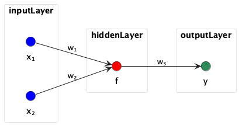
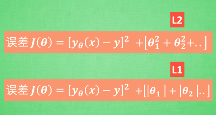

資料預處理
Table of Contents

進行數運模式運算之前，需要進行的數據預處理工作大致可分為以下幾點：
- 數據遺漏值處理
- 數據分類編碼
- 數據訓練集與測試集之分割
- 數據特徵選取
1. 資料預處理
在收集到所需的資料後，常會遇到各種資料不全、缺失的情況，因此需要對資料進行整理，以便後續的分析。進行數運模式運算之前，需要進行的資料預處理工作大致可分為以下幾點：
- 數據遺漏值處理
- 數據分類編碼
- 數據訓練集與測試集之分割
- 數據特徵選取
以下的程式碼都是簡單的pandas應用，如果你看不懂，表示你自已要惡補一下Pandas的課程，可以參看:
1.1. 刪除遺漏值
現實世界中可能會因各種原因導致數據缺失或遺漏(如問卷被刻意留白)，這些部份通常會以「空白」、「NaN」或「NULL」來取代。
1.1.1. 查看資料集內容
1: csv_data = '''A,X,B,C,D 2: 1.0,,2.0,3.0,4.0 3: 5.0,,6.0,,8.0 4: 10.0,,11.0,12.0 5: ,,,,''' 6: import sys 7: import pandas as pd 8: # python 2.7需進行unicode轉碼 9: if (sys.version_info < (3, 0)): 10: csv_data = unicode(csv_data) 11: # 讀入程式檔中的csv資料 12: from io import StringIO 13: df = pd.read_csv(StringIO(csv_data)) 14: print(df)
A X B C D
0 1.0 NaN 2.0 3.0 4.0
1 5.0 NaN 6.0 NaN 8.0
2 10.0 NaN 11.0 12.0 NaN
3 NaN NaN NaN NaN NaN
雖然pd.read_csv是用來讀取網路上或本機端的csv檔，此處為了省去大家讀取，我們以直接以字串模擬一個檔案出來，所以在讀取時要以以下的方式來讀：
1: pd.read_csv)StringIO(字串變數名稱)
1.1.2. 遺漏值的識別
現在可以大概統計一下遺漏值
1: # 列出每行有的null個數 2: print(df.isnull().sum()) 3: # access the underlying NumPy array 4: # via the `values` attribute 5: df.values
A 1 X 4 B 1 C 2 D 2 dtype: int64
1.1.3. 刪除有遺漏值的記錄
雖然刪除包含遺漏值的數據似乎是個方便的方法，但終究可能會刪除過多的樣本，導致分析的結果並不可靠；或是因為刪除了特徵的時候，卻失去了重要的資訊。
1: # 剛除有遺失值的資料列 2: print('刪掉有遺失值的列:df.dropna(axis=1)') 3: print(df.dropna(axis=0)) 4: # 剛除有遺失值的資料行 5: print('刪掉有遺失值的行:df.dropna(axis=1)') 6: print(df.dropna(axis=1)) 7: # 剛除整列為NaN者 8: print('剛除整行為NaN者:df.dropna(how=\'all\')') 9: print(df.dropna(how='all') ) 10: # 刪除有值個數低於thresh的列 11: print('刪除有值個數低於thresh的列:df.dropna(thresh=4)') 12: print(df.dropna(thresh=4)) 13: # 刪除特定行(如第C行)中有NaN之列 14: print('刪除特定行(如第C行)中有NaN之列:df.dropna(subset=[\'C\'])') 15: print(df.dropna(subset=['C']))
刪掉有遺失值的列:df.dropna(axis=1)
Empty DataFrame
Columns: [A, X, B, C, D]
Index: []
刪掉有遺失值的行:df.dropna(axis=1)
Empty DataFrame
Columns: []
Index: [0, 1, 2, 3]
剛除整行為NaN者:df.dropna(how='all')
A X B C D
0 1.0 NaN 2.0 3.0 4.0
1 5.0 NaN 6.0 NaN 8.0
2 10.0 NaN 11.0 12.0 NaN
刪除有值個數低於thresh的列:df.dropna(thresh=4)
A X B C D
0 1.0 NaN 2.0 3.0 4.0
刪除特定行(如第C行)中有NaN之列:df.dropna(subset=['C'])
A X B C D
0 1.0 NaN 2.0 3.0 4.0
2 10.0 NaN 11.0 12.0 NaN
1.2. 填補遺遺漏值
最常見的「插補技術」之一為「平均插補」(mean imputation)，即，以整個特徵行的平均值來代替遺漏值。
1: csv_data = '''A,X,B,C,D 2: 1.0,,2.0,3.0,4.0 3: 5.0,,6.0,,8.0 4: 10.0,,11.0,12.0 5: ,,,,''' 6: import sys 7: import pandas as pd 8: # python 2.7需進行unicode轉碼 9: if (sys.version_info < (3, 0)): 10: csv_data = unicode(csv_data) 11: # 讀入程式檔中的csv資料 12: from io import StringIO 13: df = pd.read_csv(StringIO(csv_data)) 14: 15: # impute missing values via the column mean 16: from sklearn.impute import SimpleImputer 17: import numpy as np 18: # axis=0: 以行的平均值來補 19: # axis=1: 以列的平均值來補 20: # strategy的選項有: median(中位數)、most_freqent(最頻繁出現者) 21: # most_freqent在做為分類特徵時很有用 22: imr = SimpleImputer(missing_values=np.nan, strategy='mean') 23: imr = imr.fit(df.values) 24: imputed_data = imr.transform(df.values) 25: print(df) 26: print(imputed_data)
A X B C D
0 1.0 NaN 2.0 3.0 4.0
1 5.0 NaN 6.0 NaN 8.0
2 10.0 NaN 11.0 12.0 NaN
3 NaN NaN NaN NaN NaN
[[ 1. 2. 3. 4. ]
[ 5. 6. 7.5 8. ]
[10. 11. 12. 6. ]
[ 5.33333333 6.33333333 7.5 6. ]]
scikit-learn早期版本的填補類別為Imputer，屬於 transformer 類別，主要的工作是做「數據轉換」，這些 estimator 有兩種基本方法：fit 與 transform，fit 方法是用來進行參數學習。在目前的版本中，SimpleImputer 已經被拿來取代以前的 sklearn.preprocessing.Imputer
更詳細的使用教學請閱讀[Day03] 拾起武器- Data Preprocessing(02)
1.3. [作業]資料預處理 TNFSH
1.3.1. 題目
南一中網路書店即將開張，為了處理龐大的書單資料，資訊科教師們很無恥的把書籍資料登錄工作當成作業分派給一年級的修課學生，所謂團結力量大，一份不太可靠的書目資料就這麼完成了。
這份書目資料共計271,350筆，每筆資料有以下9個欄位
- ’ISBN’
- ’Book-Title’
- ’Book-Author’
- ’Year-Of-Publication’
- ’Publisher’
- ’Image-URL-S’
- ’Image-URL-M’
- ’Image-URL-L’
- ’Book-Price’
然而，大概是因為作者群都是被迫做白工的關係，這份資料有不少缺失值與錯誤資料，錯誤的類型大概有以下幾類：
- 缺失: 就是該欄位完全沒有值
- 價格錯誤: 書價為0，或是書價超過20000元
- 出版年代錯誤: 年代為0或是超過2024年
1.3.2. 要求
請你透過colab來完成以下的任務：
1.3.2.1. 讀檔
你可以選擇用Pandas直接讀線上的檔案，也可以選擇將檔案上傳到Google的雲端硬碟後再利用Colab來讀取。
1.3.2.2. 預處理
要請你進行以下的資料預處理
- 除所有有缺失值的記錄(只要有一欄有缺失值、該筆資料就整筆刪去)
- 改變錯誤日期，超過2024的都改為2024
- 改變錯誤日期，日期為0的都改為1900
- 改變錯誤書價，超過2000的都改為1000
- 改變錯誤書價，書價為0者改為100
1.3.2.3. 輸出
最後輸出以下內容
- 列出原始資料筆數
- 列出條正(刪除缺失值)後的資料筆數
- 列出2000年出版的書籍數量
- 列出作者中有Bruce的書籍數量
- 列出 500<=書價<=800 的書籍數量
- 列出平均書價
1.3.3. 參考答案
整份colab的程式碼要能一次執行並輸出以下結果(不能直接print我給的答案…)
原始資料筆數 271350 可用資料數: 259397 2000年出版: 16438 作者群中有Bruce: 667 800<=書價<=1000: 58776 平均書價: 559.23
1.3.4. 友情提醒
- 資料量很大，相信我，你不會想用Excel或Numbers或Google試算表來打開它然後逐一處理…，我試過在一台8G的Macbook Air上用Numbers打開這個csv檔，大概花了 八分鐘 就開起來了…
- 你可以參考Python選修Pandas教材，不過這份教材只是概略描述基本功能，你可能還需要再自行Google相關的功能
2. 資料集分類特徵編碼
2.1. categorical feature
真實世界的數據集往往包含各種「類別特徵」(categorical feature)，類別特徵可再分為
- nominal feature: 名義特徵
- ordinal feature: 次序特徵
1: import pandas as pd 2: df = pd.DataFrame([['green', 'M', 10.1, 'class2'], 3: ['red', 'L', 13.5, 'class1'], 4: ['blue', 'XL', 15.3, 'class2']]) 5: 6: df.columns = ['color', 'size', 'price', 'classlabel'] 7: print(df)
color size price classlabel 0 green M 10.1 class2 1 red L 13.5 class1 2 blue XL 15.3 class2
2.2. ordinal feature
4個欄位中只有size算是ordinal feature(有順序性)，此處自定一個 mapping dictionary，即 size_mapping，然後將 classlabel 對應到 size_mapping 中的鍵值(程式第5行)。
1: ### Mapping ordinal features 2: size_mapping = {'XL': 3, 3: 'L': 2, 4: 'M': 1} 5: df['size'] = df['size'].map(size_mapping) 6: print(df)
color size price classlabel 0 green 1 10.1 class2 1 red 2 13.5 class1 2 blue 3 15.3 class2
2.3. nominal feature
接下來要處理兩個nominal feature: color, classlabel。
2.3.1. classlabel
許多機器學習的函式庫需要將「類別標籤」編碼為整數值。方法之一是以列舉方式為這些 nominal features 自 0 開始編號，先以 enumerate 方式建立一個 mapping dictionary: class_mapping(程式第2行)，然後利用這個字典將類別特徵轉換為整數值。
1: class_mapping = { 2: label: idx for idx, label in enumerate(np.unique(df['classlabel'])) 3: } 4: print(class_mapping) 5: # 將類別特徵轉換為整數值 6: df['classlabel'] = df['classlabel'].map(class_mapping) 7: print(df)
{'class1': 0, 'class2': 1}
color size price classlabel
0 green 1 10.1 1
1 red 2 13.5 0
2 blue 3 15.3 1
能將類別轉成整數，也要能將整數轉回類別。此處可以利用已產生的對應字典，藉由借調 key-value 來產生「反轉字典」(第2行)，將對調產生的整數還原回原始類別特徵。
1: # 產生反轉字典，將整數還原至原始的類別標籤 2: inv_class_mapping = {v: k for k, v in class_mapping.items()} 3: df['classlabel'] = df['classlabel'].map(inv_class_mapping) 4: print(df)
color size price classlabel 0 green 1 10.1 class2 1 red 2 13.5 class1 2 blue 3 15.3 class2
2.3.2. scikit-learn LabelEncoder
事實上，scikit-learn 中有一個更為方便的 LabelEncoder 類別則可以直接完成上述工作(第4行)。
1: # Label encoding with sklearn's LabelEncoder 2: from sklearn.preprocessing import LabelEncoder 3: le = LabelEncoder() 4: y = le.fit_transform(df['classlabel'].values) 5: print(y) 6: df['classlabel'] = y 7: print(df) # 類別與數字的對應不一定與自訂字典一致
[1 0 1] color size price classlabel 0 green 1 10.1 1 1 red 2 13.5 0 2 blue 3 15.3 1
你有看出這樣轉換會有什麼問題嗎?
2.4. One-Hot Encoding
scikit-learn 的 LabelENcoder 類別可以用來將「類別特徵」編碼為整數值，但這樣會引發另一個問題，如果我們將上述資料中的 color 特徵轉換為整數值，如下：
1: X = df[['color', 'size', 'price', 'classlabel']].values 2: 3: # 以LabelEncoder轉換 4: from sklearn.preprocessing import LabelEncoder 5: color_le = LabelEncoder() 6: print(X[:,0]) 7: X[:,0] = color_le.fit_transform(X[:,0]) 8: print(X[:,0])
['green' 'red' 'blue'] [1 2 0]
由輸出結果可以發現，經過類別編碼後的顏色特徵，由原本不具次序的特徵變成存在大小關係(red>green>blue)，這明顯會影響 model 運算的結果。
針對此一問題，常見的解決方案是 one-hot encoding，其原理是：對特徵值中的每個值，建立一個新的「虛擬特徵」(dummy feature)。
2.4.1. 以pandas get_dummies()進行One Hot Encoding
利用 Pandas 套件的 get_dummies 類別，直接將類別資料轉成二進位類型，即One-Hot encoding。這種轉換只有字串數據會被轉換，其他內容則否。
1: print('===原始資料===') 2: print(df) 3: 4: OheDf = pd.get_dummies(df, columns=['color']) 5: print('===轉換後資料===') 6: print(OheDf)
===原始資料=== color size price classlabel 0 green 1 10.1 1 1 red 2 13.5 0 2 blue 3 15.3 1 ===轉換後資料=== size price classlabel color_blue color_green color_red 0 1 10.1 1 False True False 1 2 13.5 0 False False True 2 3 15.3 1 True False False
2.4.2. ColumnTransformer
- 利用 ColumnTransformer 函式庫的 ColumnTransformer 類別，將特徵值轉換 One-Hot Encoding 的對應矩陣，如程式第14行。
1: from sklearn.preprocessing import OneHotEncoder 2: print('===原始資料===') 3: print(df) 4: 5: from sklearn.compose import ColumnTransformer 6: 7: X = df[['color', 'size', 'price']].values 8: ct = ColumnTransformer( 9: # The column numbers to be transformed (here is [0] but can be [0, 1, 3]) 10: # Leave the rest of the columns untouched 11: [('OneHot', OneHotEncoder(), [0])], remainder='passthrough' 12: ) 13: print('===轉換後資料===') 14: print(ct.fit_transform(X))
===轉換後資料=== [[0.0 1.0 0.0 1 10.1] [0.0 0.0 1.0 2 13.5] [1.0 0.0 0.0 3 15.3]]
2.4.3. scikit learn OneHotEncoder()
1: # 初始化 OneHotEncoder 2: encoder = OneHotEncoder() 3: 4: # 将 color 列进行 one-hot 编码 5: encoded_colors = encoder.fit_transform(df[['color']]) 6: 7: # 将转换后的结果转换为 DataFrame 8: encoded_df = pd.DataFrame(encoded_colors.toarray(), columns=encoder.get_feature_names_out(['color'])) 9: 10: # 将原始数据框中的其他列和转换后的 one-hot 编码合并 11: df_encoded = pd.concat([df.drop(columns=['color']), encoded_df], axis=1) 12: 13: print(df_encoded)
size price classlabel color_blue color_green color_red 0 1 10.1 1 0.0 1.0 0.0 1 2 13.5 0 0.0 0.0 1.0 2 3 15.3 1 1.0 0.0 0.0
3. 資料正規化
當我們在比較分析兩組數據資料時，可能會遭遇因單位的不同(例如：身高與體重)，或數字大小的代表性不同(例如：粉專1萬人與滿足感0.8)，造成各自變化的程度不一，進而影響統計分析的結果；為解決此類的問題，我們可利用資料的正規化(Normalization
)與標準化(Standardization)，藉由將原始資料轉換成無量綱(Dimensionless)的純量後，來進行數據的比較及分析1。
「特徵縮放」(Feature scaling)是資料預處理的一個關鍵，「決策樹」和「隨機森林」是極少數無需進行 feature scaling 的分類技術；對多數機器學習演算法而言，若特徵值經過適當的縮放，都能有更佳成效。
Feature scaling 的重要性可以以下例子看出，假設有兩個特徵值(a, b)，其中 a 的測量範圍為 1 到 10，b 的測量值範圍為 1 到 100000，以典型分類演算法的做法，一定是忙於最佳化特徵值 b；若以 KNN 的演算法，也會被特徵值 b 所技配。
正規化有兩種常用的方法，可以將不同規模的特徵轉化為相同的規模：常態化(normalization)和標準化(standardization)：
3.1. Normalization
資料的正規化(Normalization)是將原始資料的數據按比例縮放於 [0, 1] 區間中，且不改變其原本分佈。舉例來說，若我們現有兩組數據資料，分別表示 500 項商品的銷售量 Sample 1 及銷售額 Sample 2，如下圖所示，很明顯地，此兩組資料的單位不同，且數字上有著懸殊的差異，分別透過資料正規化後，兩組資料將同時轉換成純量縮放於 [0,1] 區間中，如下右圖所示；這樣的資料轉換，能排除資料單位的限制，提供我們一個相同的基準來進行後續比較分析。

Figure 1: 原始資料v.s.正規化資料
3.2. Standardization
資料的標準化(Standardization)可運用在機器學習演算法中，它能帶給模型下面兩個好處：
3.2.1. 提升模型的收斂速度
在建構機器學習模型時，我們會利用梯度下降法(Gradient Descent)來計算成本函數(Cost Function)的最佳解；假設我們現有兩個特徵值 x1 in [0,1] 與 x2 in [0,10000]，則在 x1-x2 平面上成本函數的等高線會呈窄長型，導致需較多的迭代步驟，另外也可能導致無法收斂的情況發生。因此，若將資料標準化，則能減少梯度下降法的收斂時間。
3.2.2. 提高模型的精準度
將特徵值 x1 及 x2 餵入一些需計算樣本彼此的距離(例如:歐氏距離)分類器演算法中，則 x2 的影響很可能將遠大於 x1，若實際上 x1 的指標意義及重要性高於 x2，這將導致我們分析的結果失真。因此，資料的標準化是有必要的，可讓每個特徵值對結果做出相近程度的貢獻。
3.2.3. 常見的標準化及正規化方法
3.2.3.1. Z分數標準化(Z-Score Standardization)
\[ Z=\frac{X-\mu}{\delta}\sim N(0,1)\]
3.2.3.2. 最小值最大值正規化(Min-Max Normalization)
\[ X_{nom} = \frac{X-X_{min}}{X_{max}-X_{min}} \in [0,1] \]
「特徵縮放」(Feature scaling)是資料預處理的一個關鍵，「決策樹」和「隨機森林」是極少數無需進行 feature scaling 的分類技術；對多數機器學習演算法而言，若特徵值經過適當的縮放，都能有更佳成效。
Feature scaling 的重要性可以以下例子看出，假設有兩個特徵值(a, b)，其中 a 的測量範圍為 1 到 10，b 的測量值範圍為 1 到 100000，以典型分類演算法的做法，一定是忙於最佳化特徵值 b；若以 KNN 的演算法，也會被特徵值 b 所技配。
正規化有兩種常用的方法，可以將不同規模的特徵轉化為相同的規模：常態化(normalization)和標準化(standardization)：
3.3. 常態化
將特徵值縮化為 0~1 間，這是「最小最大縮放」(min-max scaling)的一個特例，某一特徵值的常態化做法如下：
\[x_{norm}^i = \frac{x^i-x_{min}}{x_{max}-x_{min}}\]
若以 scikit-learn 套件來完成實作，其程式碼如下：
1: from sklearn.preprocessing import MinMaxScaler 2: mms = MinMaxScaler() 3: X_train_norm = mms.fit_transform(X_train) 4: X_test_norm = mms.fit_transform(X_test) 5: print(X_train_norm[0])
[0.64619883 0.83201581 0.4248366 0.46236559 0.27160494 0.35172414 0.09704641 0.68 0.18987342 0.23623446 0.45744681 0.28571429 0.19400856]
3.4. 標準化
雖說常態化簡單實用，但對許多機器學習演算法來說(特別是梯度下降法的最佳化)，標準化則更為實際，我們可令標準化後的特徵值其平均數為 0、標準差為 1，這樣一來，特徵值會滿足常態分佈，進而使演算法對於離群值不那麼敏感。標準化的公式如下：
\[x_{std}^i = \frac{x^i-\mu_x}{\sigma_x}\]
若以 scikit-learn 套件來完成實作，其程式碼如下：
1: from sklearn.preprocessing import StandardScaler 2: stdsc = StandardScaler() 3: X_train_std = stdsc.fit_transform(X_train) 4: X_test_std = stdsc.transform(X_test) 5: print(X_train_std[0])
[ 0.71225893 2.22048673 -0.13025864 0.05962872 -0.50432733 -0.52831584 -1.24000033 0.84118003 -1.05215112 -0.29218864 -0.20017028 -0.82164144 -0.62946362]
4. 資料分割

4.1. 為什麼要分割資料
- 訓練集（training): 舉例來說就是上課學習。主要用在訓練階段，用於模型擬合，直接參與了模型參數調整的過程2。
- 驗證集（validation）: 舉例來說就是模擬考，你會根據模擬考的成績繼續學習、或調整學習方式重新學習。在訓練過程中，用於評估模型的初步能力與超參數調整的依據。不過驗證集是非必需的，不像訓練集和測試集。如果不需要調整超參數，就可以不使用驗證集2。
- 測試集（test）就像是學測，用來評估你最終的學習結果。用來評估模型最終的泛化能力。為了能評估模型真正的能力，測試集不應該為參數調整、選擇特徵等依據2。
使用學測來比喻，是因為測試集不應該做為參數調整、選擇特徵等依據。這些選擇與調整可以想像成學習方式的調整，但學測已經考完，你不能時光倒轉回到最初調整學習方式2。
4.2. 資料分割實作
訓練集與測試集的分割可以自行以Python進行分割，也可以直接呼叫函式進行分割
4.2.1. 手動分割
1: import pandas as pd 2: import numpy as np 3: import random 4: 5: df_wine = pd.read_csv('https://archive.ics.uci.edu/' 6: 'ml/machine-learning-databases/wine/wine.data', 7: header=None) 8: 9: df_wine.columns = ['Class label', 'Alcohol', 'Malic acid', 'Ash', 10: 'Alcalinity of ash', 'Magnesium', 'Total phenols', 11: 'Flavanoids', 'Nonflavanoid phenols', 'Proanthocyanins', 12: 'Color intensity', 'Hue', 'OD280/OD315 of diluted wines', 13: 'Proline'] 14: 15: train_len = int(len(df_wine) * 0.7) 16: 17: # 打亂資料集順序 18: idx = list(df_wine.index) 19: random.shuffle(idx) 20: 21: # 分割資料集 22: TrainSet = df_wine.loc[idx[:train_len]] 23: TestSet = df_wine.loc[idx[train_len:]] 24: print(len(TrainSet)) 25: print(len(TestSet)) 26: X_train, y_train = TrainSet.iloc[:, 1:].values, TrainSet.iloc[:, 0].values 27: X_test, y_test = TestSet.iloc[:, 1:].values, TestSet.iloc[:, 0].values 28: 29: print('==========訓練集==========') 30: print(X_train[:2]) 31: print(y_train[:2]) 32: print('==========測試集==========') 33: print(X_test[:2]) 34: print(y_test[:2])
124 54 ==========訓練集========== [[1.229e+01 2.830e+00 2.220e+00 1.800e+01 8.800e+01 2.450e+00 2.250e+00 2.500e-01 1.990e+00 2.150e+00 1.150e+00 3.300e+00 2.900e+02] [1.340e+01 4.600e+00 2.860e+00 2.500e+01 1.120e+02 1.980e+00 9.600e-01 2.700e-01 1.110e+00 8.500e+00 6.700e-01 1.920e+00 6.300e+02]] [2 3] ==========測試集========== [[1.394e+01 1.730e+00 2.270e+00 1.740e+01 1.080e+02 2.880e+00 3.540e+00 3.200e-01 2.080e+00 8.900e+00 1.120e+00 3.100e+00 1.260e+03] [1.402e+01 1.680e+00 2.210e+00 1.600e+01 9.600e+01 2.650e+00 2.330e+00 2.600e-01 1.980e+00 4.700e+00 1.040e+00 3.590e+00 1.035e+03]] [1 1]
4.2.2. 呼叫scikit learn的function
1: import pandas as pd 2: import numpy as np 3: from sklearn.model_selection import train_test_split 4: 5: df_wine = pd.read_csv('https://archive.ics.uci.edu/' 6: 'ml/machine-learning-databases/wine/wine.data', 7: header=None) 8: 9: df_wine.columns = ['Class label', 'Alcohol', 'Malic acid', 'Ash', 10: 'Alcalinity of ash', 'Magnesium', 'Total phenols', 11: 'Flavanoids', 'Nonflavanoid phenols', 'Proanthocyanins', 12: 'Color intensity', 'Hue', 'OD280/OD315 of diluted wines', 13: 'Proline'] 14: 15: print('Class labels', np.unique(df_wine['Class label'])) 16: 17: X, y = df_wine.iloc[:, 1:].values, df_wine.iloc[:, 0].values 18: 19: from sklearn.model_selection import train_test_split 20: X_train, X_test, y_train, y_test = train_test_split(X, y, 21: test_size=0.3, random_state=0, stratify=y) 22: 23: print(len(X_train)) 24: print(len(y_test)) 25: 26: print('==========訓練集==========') 27: print(X_train[:2]) 28: print(y_train[:2]) 29: print('==========測試集==========') 30: print(X_test[:2]) 31: print(y_test[:2])
Class labels [1 2 3] 124 54 ==========訓練集========== [[1.362e+01 4.950e+00 2.350e+00 2.000e+01 9.200e+01 2.000e+00 8.000e-01 4.700e-01 1.020e+00 4.400e+00 9.100e-01 2.050e+00 5.500e+02] [1.376e+01 1.530e+00 2.700e+00 1.950e+01 1.320e+02 2.950e+00 2.740e+00 5.000e-01 1.350e+00 5.400e+00 1.250e+00 3.000e+00 1.235e+03]] [3 1] ==========測試集========== [[1.377e+01 1.900e+00 2.680e+00 1.710e+01 1.150e+02 3.000e+00 2.790e+00 3.900e-01 1.680e+00 6.300e+00 1.130e+00 2.930e+00 1.375e+03] [1.217e+01 1.450e+00 2.530e+00 1.900e+01 1.040e+02 1.890e+00 1.750e+00 4.500e-01 1.030e+00 2.950e+00 1.450e+00 2.230e+00 3.550e+02]] [1 2]
5. 資料間的關係
找出特徵值間的差異與相似性是機器學習中非常重要的工作。
5.1. 兩點間的距離
兩種常見的特徵距離計算方式:曼哈頓距離及歐幾里得距離，以一個城市中的兩個地標為例(如圖2中的兩個黑點)。

Figure 2: 城市中的兩個地標
5.1.1. 曼哈頓距離（Manhattan distance）
在如圖2這樣的棋盤式街道的城式中，要由點(1,1)走到(7,7)的最簡單方式是先往上直走到(1,7)，再右轉直走到(7,7)，這便是曼哈頓距離，這段距離為 \(|1-7|+|1-7| \)，公式為
\[ \sum_{i=1}^n|x_i-y_i| \]
5.1.2. 歐幾里得距離（Euclidian distance）
Figure 3: Numbus 2000
如果我們肯花美金4993買到Nimbus 2000，那我們就能實踐「直線是兩點間最短距離」這個法則，此時圖2中由點(1,1)到點(7,7)的矩離就變成\( \sqrt{(1-7)^2+(1-7)^2} \)，公式為
\[ \sqrt{\sum_{i=1}^n(x_i-y_i)^2 } \]
5.2. 兩個向量間的距離
以下為三個學生的國文、數學、英文三科成績，哪兩個學生的學業能力較為接近?
- James: 80, 90, 70
- Ruby: 90, 80, 60
- Vanessa: 90, 70, 90
為了回答上述問題，我們可以將學生的各科成績當成vector(如圖4)，我們的問題就變成：哪兩個vector更為相似? 三個學生的成績向量分佈如下：

Figure 4: 三個學生的成績向量
如何計算? 有以下三種方式：歐幾里得距離、餘弦相似度、向量內積(如圖5)4。

Figure 5: Vector Similarity
5.2.1. 歐幾里得距離

Figure 6: 歐幾里得距離
多維空間中兩個向量之間的直線距離，距離越近越相似。歐幾里得距離演算法的優點是可以反映向量的絕對距離，適用於需要考慮向量長度的相似性計算。例如推薦系統中，需要根據使用者的歷史行為來推薦相似的商品，這時就需要考慮使用者的歷史行為的數量，而不僅僅是使用者的歷史行為的相似度5。
- \( a: (a_1, a_2, \dots , a_n)\)
- \( b: (b_1, b_2, \dots , b_n)\)
計算兩向量a, b歐幾里得距離的方式為: \( d(a,b) = \sqrt{(a_1-b_1)^2 + (a_2-b_2)^2 + \dots + (a_n-b_n)^2}\)
5.2.2. Cosine Similarity

Figure 7: 餘弦相似度
兩個向量的夾角越小越相似，比較兩個向量的餘弦值進行比較，夾角越小，餘弦值越大。餘弦相似度對向量的長度不敏感，只關注向量的方向，因此適用於高維向量的相似性計算。例如語義搜尋和文件分類5。當兩個向量的方向重合時夾角餘弦取最大值1，當兩個向量的方向完全相反夾角餘弦取最小值-1。
- \( a: (a_1, a_2, \dots , a_n)\)
- \( b: (b_1, b_2, \dots , b_n)\)
計算兩向量a, b餘弦相似度的方式為: \( sim(a,b) = \frac{a \cdot b}{||a| \cdot |b||} = \frac{ \sum\limits_{i=1}^n a_i \times b_i}{\sqrt{\sum\limits_{i=1}^na_i^2} \times \sqrt{\sum\limits_{i=1}^nb_i^2}} \)
有了公式就可以自己用你苦學了半年的Python+高一數學來手刻程式，或是呼叫其他函式庫來計算。
5.2.2.1. Python手刻
1: import math 2: 3: def cosine_similarity(v1,v2): 4: "compute cosine similarity of v1 to v2: (v1 dot v2)/{||v1||*||v2||)" 5: sumxx, sumxy, sumyy = 0, 0, 0 6: for i in range(len(v1)): 7: x = v1[i]; y = v2[i] 8: sumxx += x*x 9: sumyy += y*y 10: sumxy += x*y 11: return sumxy/math.sqrt(sumxx*sumyy) 12: 13: James = [80, 90, 70] 14: Ruby = [90, 80, 60] 15: Vanessa = [90, 70, 90] 16: JR_sim = cosine_similarity(James, Ruby) 17: RV_sim = cosine_similarity(Ruby, Vanessa) 18: JV_sim = cosine_similarity(James, Vanessa) 19: 20: print('James v.s. Ruby:', JR_sim) 21: print('Ruby v.s. Vanessa:', RV_sim) 22: print('James v.s. Vanessa:', JV_sim)
James v.s. Ruby: 0.9925966195847843 Ruby v.s. Vanessa: 0.977356154645257 James v.s. Vanessa: 0.978640304032486
5.2.2.2. Numpy
1: from numpy import dot 2: from numpy.linalg import norm 3: 4: James = [80, 90, 70] 5: Ruby = [90, 80, 60] 6: Vanessa = [90, 70, 90] 7: JR_sim = dot(James, Ruby)/(norm(James)*norm(Ruby)) 8: RV_sim = dot(Ruby, Vanessa)/(norm(Ruby)*norm(Vanessa)) 9: JV_sim = dot(James, Vanessa)/(norm(James)*norm(Vanessa)) 10: 11: print('James v.s. Ruby:', JR_sim) 12: print('Ruby v.s. Vanessa:', RV_sim) 13: print('James v.s. Vanessa:', JV_sim)
James v.s. Ruby: 0.9925966195847841 Ruby v.s. Vanessa: 0.9773561546452569 James v.s. Vanessa: 0.9786403040324858
5.2.2.3. Scipy
1: from scipy import spatial 2: 3: James = [80, 90, 70] 4: Ruby = [90, 80, 60] 5: Vanessa = [90, 70, 90] 6: JR_sim = 1 - spatial.distance.cosine(James, Ruby) 7: RV_sim = 1 - spatial.distance.cosine(Ruby, Vanessa) 8: JV_sim = 1 - spatial.distance.cosine(James, Vanessa) 9: 10: print('James v.s. Ruby:', JR_sim) 11: print('Ruby v.s. Vanessa:', RV_sim) 12: print('James v.s. Vanessa:', JV_sim)
James v.s. Ruby: 0.9925966195847843 Ruby v.s. Vanessa: 0.977356154645257 James v.s. Vanessa: 0.978640304032486
5.2.3. Dot Product

Figure 8: 向量內積
一種計算向量之間相似度的度量演算法，它計算兩個向量之間的點積（內積），所得值越大越與搜尋值相似5。
- \( a: (a_1, a_2, \dots , a_n)\)
- \( b: (b_1, b_2, \dots , b_n)\)
計算兩向量a, b內積的方式為: \( a \cdot b = a_1b_1 + a_2b_2 + \dots + a_nb_n \)
或是
\[ a \cdot b = |a||b| \cos \alpha \]
5.3. 其他應用

5.4. 進階閱讀
5.5. [作業]能力相似度 TNFSH
6. 資料擴增/資料增強(Data Augmentation)
7. 選取有意義的特徵
overfitting 的產生原因是模型過度遷就於訓練數據，導致面對新數據(測試集)時成效不彰，我們稱這種模型具有較高變異性(high variance)，一般的解決策略有：
- 收集更多的訓練數據集
- 經由正規化，對於過度複雜的模型引進一個「懲罰」(penalty)
- 以較少的參數做出較簡單的模型(使用更簡單的模型)
- 減少數據維度
7.1. L1L2 regularzation
一個典型的解釋9如圖10，“我們知道, 過擬合就是所謂的模型對可見的數據過度自信, 非常完美的擬合上了這些數據, 如果具備過擬合的能力, 那麼這個方程就可能是一個比較複雜的非線性方程 , 正是因為這裡的 \(x^3\) 和 \(x^2\) 使得這條虛線能夠被彎來彎去, 所以整個模型就會特別努力地去學習作用在 \(x^3\) 和 \(x^2\) 上的 \(c\), \(d\) 參數. 但是我們期望模型要學到的卻是 這條藍色的曲線. 因為它能更有效地概括數據.而且只需要一個 \(y=a+bx\) 就能表達出數據的規律. 或者是說, 藍色的線最開始時, 和紅色線同樣也有 \(c,d\) 兩個參數, 可是最終學出來時, \(c\) 和 \(d\) 都學成了 0, 雖然藍色方程的誤差要比紅色大, 但是概括起數據來還是藍色好. 那我們如何保證能學出來這樣的參數呢? 這就是 l1 l2 正規化出現的原因。”

Figure 10: 過擬合問題
對於上述訓練出的兩個方程式，我們可以用\((y_{\theta}(x)-y)^2\)來計算模型預測值\(y(x)\)和真實數據\(y\)的誤差，而 L1, L2 就只是在這個誤差公式後加上一些式子來修正這個公式(如圖11)，其目的在於讓誤差的最佳化不僅取決於訓練數據擬合的優劣，同時也取決於參數值(如 \(c,d\))的大小；L2 正規化以參數平方來做為計算方式，L1 正規化則是計算每個參數的絕對值。

Figure 11: L1,L2 正規化公式
進一步以 Tensorflow Playground 的圖示來觀察 L1,L2 正規化的差異10，如果把正規化(Regularization)設定為 L1，再執行訓練。可以看到很多權重都被設定為 0，特徵輸入與隱藏層的神經元被大大的減少，如圖12，整個模型的複雜度簡化很多。L1 正規化確實有助於將我們的複雜模型縮減為更小的泛化模型。添加正規化後，我們看到無用的功能全部變為零，並且連接線變得稀疏並顯示為灰色。倖存下來的唯一特徵是 \(x_1\) 平方和 \(x_2\) 平方，這是有道理的，因為這 2 個特徵加在一起就構成了一個圓的方程式。

Figure 12: L1 正規化
反觀 L2 正規化，當我們訓練它時，每個權重與神經元都還是處於活動狀態，但是非常虛弱，如圖13，L1 正規化使用其中一個特徵而將某些拋棄，而 L2 正規化將同時保留特徵並使權重值保持較小。因此，使用 L1，您可以得到一個較小的模型，但預測性可能較低。所以：
- L1 正規化：有可能導致零權重，因刪除更多特徵而使模型稀疏。
- L2 正規化：會對更大的權重值造成更大的影響，將使權重值保持較小。

Figure 13: L2 正規化